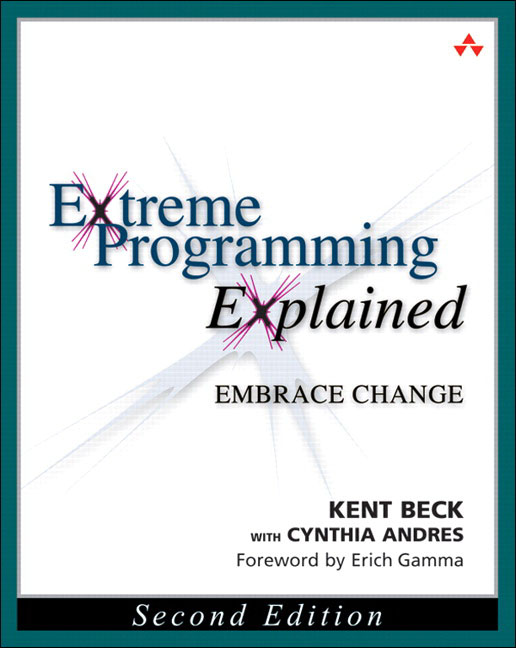
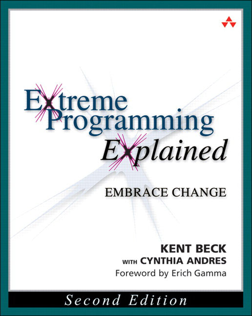

#!
Tests automatisés en Bash
Michael Borde / @michael_borde
/ Arpinum
Bonjour à tous et merci d'être présent. Je suis Michael Borde, développeur passionné chez
Arpinum. Je vais vous parler de mon hobby du moment : les tests automatisés en Bash.
Le contexte
Je travaille sur un plateau de développement et je suis en charge, avec mon équipe, d'améliorer
le quotidien de tous les fabricants.
Ces 28 derniers jours
109 entrepôts
1812 commits
48 auteurs actifs
Nous sommes suffisamment nombreux pour que ce travail soit aussi intéressant que compliqué.
Retournons quelques temps en arrière...
Mais prenons la DeLorean et retournons quelques temps en arrière.
Et si nous automatisions les opérations répétitives et sensibles ?
Tout a commencé lorsque nous avons décidé d'automatiser certaines opérations répétitives et
sensibles du quotidien.
Un outil simple : Bash
En faisant le tour de nos postes de développements et des différents serveurs, le plus simple
était d'utiliser Bash.
3 fois rien finalement
Cloner des entrepôts
Mettre à jour des sources
3 fois rien finalement : cloner ou mettre à jour en masse des entrepôts Git.
Mais avec un peu d'imagination
Créer/supprimer des branches
Créer/supprimer des jobs Jenkins
Lister les entrepôts à fusionner
Réaliser la livraison des projets
etc.
18 vaillants scripts
Mais bien vite nous avons imaginé de nombreux cas d'utilisations : créer des branches ou jobs
Jenkins en masse, livrer les projets de manière automatique, etc. Au final nous avons un peu
moins de 20 scripts.
Et il y en a pour tout le monde
Développeurs, administrateurs, livreurs, etc.
Ils concernent un peu tout le monde : développeurs, administrateurs, etc.
Les conseils de Google
If you are writing a script that is more than 100 lines long, you should probably be writing it
in Python instead.
Nous appliquons les préconisations Bash des équipes Google, sauf une peut-être : "si vous
écrivez un script de plus de 100 lignes, vous devriez surement l'écrire en Python."
En Python !
© Toute la production de Dawson's Creek
En python ! Il est malheureux Dawson, il n'a pas envie de faire du Python, il veut sortir avec
Katie Holmes comme tout le monde.
Eh oui, scripter en Bash c'est un peu...
Mais c'est compréhensible. Quand je regarde des exemples de code sur le net je me dis que
scripter en Bash c'est un peu de chance et beaucoup de Stackoverflow. Heureusement dans les
situations désespérées il reste le Nécronomicon.
Et pourtant 4796 lignes de Bash !
Et pourtant nous avons accumulé près de 5000 lignes de Bash.
Bash n'est pas le problème de fond.
Il faut tacler la complexité
Notre ennemi est la complexité que nous produisons nous même.
Et si Bash était un langage de programmation ?
Et si Bash n'était pas un langage de script mais un langage de programmation comme les autres ?
Les outils habituels
Alors je dégainerais TDD, XP et Clean Code.
Clean Code, concrètement ?
Il est tout à fait possible, en Bash, de respecter le principe de responsabilité unique, d'avoir
du code sans duplication et qui exprime l'intention.
Un équivalent à JUnit ?
Par contre, existe t-il un équivalent à JUnit ?
Bof...
Bof... et je ne me satisfais pas d'un bof.
Je vais créer mon api de tests automatisés en Bash !
Alors j'ai décidé de créer ma propre api de tests automatisés en Bash !
Les objectifs de l'api
Favoriser TDD
Ressembler à xUnit
Compatible avec l'IC
Respecter la notion de tests unitaires
En français
L'objectif numéro 1 de l'API était de favoriser TDD. Mais je souhaitais aussi quelle ressemble à
xUnit, soit compatible avec Jenkins et respecte la notion de tests unitaires. Si en plus elle
pouvait être en français comme le reste de notre code, ça serait parfait.
Make them first
F astI solated ! R epeatable ! S elf-verifying ! T imely
En m'appuyant sur la définiton FIRST de test unitaire, je voulais me concentrer sur les 3 points
du milieu : isolé, répétable, auto-vérifiant. Isolé, est une gageure par exemple. En Bash nous
pouvons facilement modifier des variables globales, créer ou détruire des arborescences. J'ai eu
mon quota de surprises désagréables.
Et donc ?
Et donc voici quelques exemples de l'API. Ils sont un peu édulcorés pour faciliter la
compréhension.
L'exécuteur de test
Le grand stratégaire est l'exécuteur de test.
Exécuter tous les fichiers de test
function executeur_executeLesFichiersDeTestDansLeRepertoire() {
local repertoire=$1
_initialiseLExecutionDesTests
_executeTousFichiersDeTest "${repertoire}" "*Test.sh"
_afficheLeResultatDesTests
_retourneUnCodeEnFonctionDuResultatDesTests
}
L'exécuteur exécute tous les fichiers de tests qui respectent un certain motif pour un
répertoire donné. Il affiche le résultat global des tests et retourne un code en fonction de
l'exécution.
Exécuter un fichier de test
function _executeLeFichierDeTest() {
local fichier=$1
source "${fichier}"
local fonctions=("$(_fonctionsPubliquesDansLeFichier "${fichier}")")
_executeFonctionSiPresente "avantTousLesTests" "${fonctions[@]}"
_executeTousLesTests "${fonctions[@]}"
_executeFonctionSiPresente "apresTousLesTests" "${fonctions[@]}"
}
Pour un fichier de test, il récupère les fonctions publiques qui par convention seront les
fonctions de test. Il exécute tous les tests entre les setups et teardowns globaux si présents.
Exécuter une fonction de test
function _executeLaFonctionAuMilieuDuSetupEtTeardown() {
local fonction=$1
shift 1
_executeFonctionSiPresente "avantChaqueTest" "$@" \
&& ${fonction} \
&& _executeFonctionSiPresente "apresChaqueTest" "$@"
_analyseLExecutionDuTest "${fonction}" $?
}
Pour une fonction de test, il l'exécute entre le setup et teardown si présents et analyse le
code retour.
Quelques affirmations
Une API de test automatisés ne serait rien sans ses affirmations.
Affirmer l'égalité
function affirmation_affirmeEgalite() {
local attendu=$1
local obtenu=$2
if [[ "${attendu}" != "${obtenu}" ]]; then
_affirmationEnErreur "Obtenu : <${obtenu}>, attendu : <${attendu}>."
fi
}
Voici une simple affirmation pour l'égalité. C'est le plus simple qui fonctionne.
Affirmer le succés
function affirmation_affirmeSucces() {
( $@ )
if (( $? != 0 )); then
_affirmationEnErreur "La commande a échoué au lieu de réussir."
fi
}
Une autre pour affirmer le succès d'une commande. C'est très utile puisque les fonctions Bash ne
retournent que des codes d'erreur.
Quelques exemples
Quelques exemples de tests.
Un test unitaire
function recupereBienLaVersionDunPom() {
local pom="${_ressources}/pom_1.0.xml"
local version=$(maven_recupereLaVersionDuPom "${pom}")
affirmation_affirmeEgalite "1.0" "${version}"
}
Etant donné un pom.xml en version 1.0, si je demande la version de ce pom, j'obtiens bien 1.0.
Un test d'intégration
function ilEstPossibleDeChangerLaBrancheDUnEntrepot() {
entrepot_cloneLaBrancheDeLEntrepot "integration" "module-a"
source "${REPERTOIRE_SCRIPT}/checkout.sh" -p "mod*" "master"
local branche="$(_recupereLaBrancheCouranteDeLEntrepot "module-a")"
affirmation_affirmeEgalite "master" "${branche}"
}
Un exemple plus ambitieux avec un test d'intégration. Je clone l'entrepôt module-a, je demande
un changement vers la branche master de tous les entrepôts qui commencent par mod et j'affirme
que module-a est sur la branche master.
Exemple de sortie console
Et pour finir, un exemple de sortie console avec de belles couleurs et un résumé de l'exécution
en bas.
Reprenons les statistiques
Lignes de code Bash :
Total : 4796 (100%)Production : 2797 (58%)Tests : 1671 (35%)API de tests : 328 (7%)
Quand on regarde la répartition des 5000 lignes de Bash, on s'aperçoit qu'il y a un tier de
test. La couverture doit être moins bonne que sur d'autres projets mais pour des opérations
proches du système, je trouve ça plutôt satisfaisant.
Et pour le fun
Nombre de tests (temps) :
Tests unitaires : 91 (13 s)Tests d'intégration : 109 (10 min)
Voici la répartition des TU/TI. Nous avons beaucoup trop de tests d'intégration
à mon goût et ils sont longs. C'est symptomatique de la programmation système. L'inversion de
contrôle y est assez complexe mais pas impossible. Quoiqu'il en soit, ces tests nous assurent
une certaine sérénité.
Fin
Pour les curieux :
http://github.com/arpinum/shebang_unit
Pour les curieux, j'ai partagé shebang_unit sur Github. C'est la petite soeur
libre de droit de l'API que je viens de présenter. Ceci conclu mon intervention. Merci.


 
